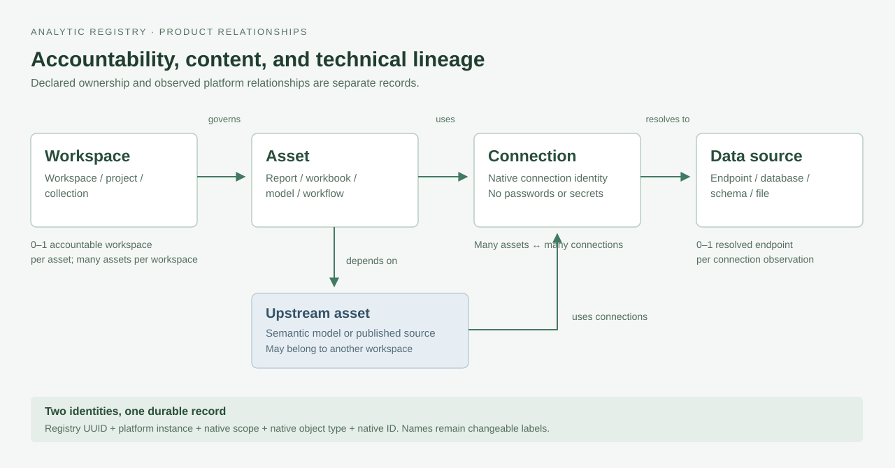

Analytic Registry V1 prototype
The versioned baseline includes the React prototype, product requirements, model diagrams, Excel extract formats, and platform collection guidance. The app uses mock data. SQL loading and identity reconciliation remain a manual process.
Start with the Excel delivery
15 sheets contain three guides, nine import tables, and Tableau_Output, PowerBI_Output, and Alteryx_Output. Each platform tab shows exact headers and labels implemented, planned, supplemental, or uncollected output.
- Collect metadata using the platform instructions and agreed scope.
- Populate the workbook's named import tables.
- Load and validate SQL Server staging manually.
- Match email and send unresolved records to Platform Manager.
Collection handoff · 117 import columns
| Platform | Collection path | Identity guidance |
|---|---|---|
| Tableau 2026.2 | PostgreSQL inventory and scoped user joins | Tableau handoff |
| Power BI / Fabric | Inventory adapter plus identity pseudocode | Power BI handoff |
| Alteryx 2025.2 | Read-only MongoDB backend queries | Alteryx handoff |
Keep native IDs separate from registry IDs. Match platform email to directory mail within the configured tenant. A missing match does not establish account inactivity. Alteryx current workflow ownership remains unresolved when backend evidence cannot verify it.
Workspace, asset, connection, and data source

The workbook's nine staging tables define delivery formats. The 53-table application model describes a future Power Apps database. These have separate purposes.
Business and decisions
Accountability, workflow steps, confirmed choices, and future operating proposals.
Requirements and model
Functional and nonfunctional requirements, relationships, column types, and purposes.
Requirements · Searchable model · Model narrative · 602 model columns
Verification and limitations
The baseline preserves known gaps. Prototype acceptance does not certify production readiness.
Identity and V1 scope
Email matching, separate directory status, Platform Manager routing, and manual SQL staging.